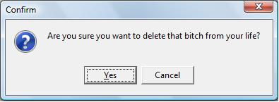

您的浏览器不支持幻灯片浏览方式，请使用最新的Chrome, Safari或Firefox以获得最佳浏览效果。
是否 厌倦 了“标准”的签名？
您是否觉得 传统的签名太缺乏个性？
您是否想尝试一下亲笔签名的照片，亦或是带有您个人笔迹的电子书？
这是一个原生态的笔迹签名工具。 源于您个性的发挥 基于您的 想象力 和 创造力 ！
这样的签名还不够震撼？

你可以 横着写, 斜着划 或者 写小点。 就在您的照片或PDF上面
还不快来 龙飞凤舞一把？
还等什么？
App Store下载,Go!
Oh，稍等片刻，亲...
别 忘 了给 好评 哦。记住 一定要给 5星哦
请使用空格键或上下键浏览